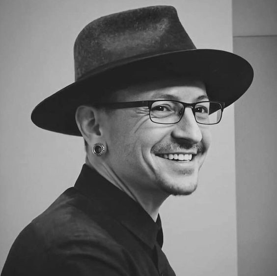
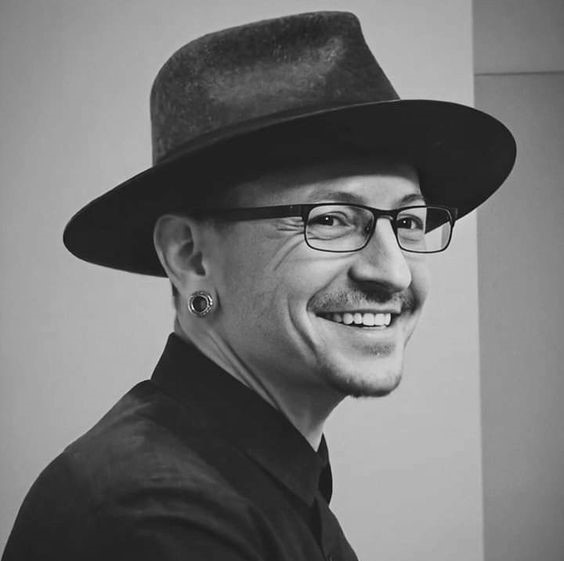

Chester Charles Bennington nació el 20 de marzo de 1976 en Phoenix, Arizona. Su madre era enfermera, mientras que su padre era un detective de la policía que trabajó en casos de abuso sexual infantil.Bennington se interesó por la música a una edad temprana, citando a las bandas Depeche Mode y Stone Temple Pilots como sus primeras inspiraciones, y soñaba con convertirse en miembro de Stone Temple Pilots, lo que logró después, cuando se convirtió en su cantante principal. Bennington sufrió de abuso sexual por parte de un conocido mayor cuando tenía siete años. Tenía miedo de pedir ayuda porque no quería que la gente pensara que era homosexual o mentía, y el abuso continuó hasta la edad de 13 años. Sus padres se divorciaron cuando tenía 11 años. El abuso y la situación en el hogar lo afectaron tanto que sintió el impulso de matar personas y huir. Para consolarse, dibujó y escribió poesía y canciones. Después del divorcio, su padre obtuvo su custodia. Bennington comenzó a abusar del consumo de marihuana, alcohol, opio, cocaína, metanfetaminas y LSD. Fue intimidado físicamente en la escuela secundaria, en una entrevista, dijo que fue «golpeado como una muñeca de trapo, por ser delgado y parecer diferente». A la edad de 17 años, Bennington se mudó con su madre, quien le prohibió salir de la casa al descubrir que era adicto a las drogas. Trabajó en un Burger King antes de comenzar su carrera como músico profesional.Finalmente, Bennington pudo superar su adicción a las drogas y luego denunció el uso de drogas en futuras entrevistas. Durante una gira de Linkin Park, comenzó a beber mucho. En 2011, dijo que había renunciado, y señaló: «Simplemente ya no quiero ser esa persona».
Biografia
Bennington fue encontrado muerto por su ama de llaves en su casa en Palos Verdes Estates, California. Su muerte fue declarada suicidio por ahorcamiento. Bennington no dejó ninguna nota de suicidio. El compañero de banda y amigo cercano Mike Shinoda confirmó su muerte en Twitter y escribió: «Conmocionado y desconsolado, pero es verdad. Una declaración oficial saldrá tan pronto como tengamos una». El 21 de julio, Brian Elias, jefe de operaciones de la oficina del médico forense, confirmó que se encontró una botella de alcohol medio vacía en la escena, pero no había otras drogas presentes. Un informe de toxicología publicado en diciembre informó «una pequeña cantidad» de alcohol en el sistema de Bennington en el momento de la muerte. La muerte de Bennington ocurrió en lo que habría sido el cumpleaños número 53 de Chris Cornell. La muerte de Cornell también fue declarada suicidio por ahorcamiento dos meses antes. Después de la muerte de Bennington, Linkin Park canceló el resto de su One More Light Tour y reembolsó las entradas.
Galeria de Imagenes


 
